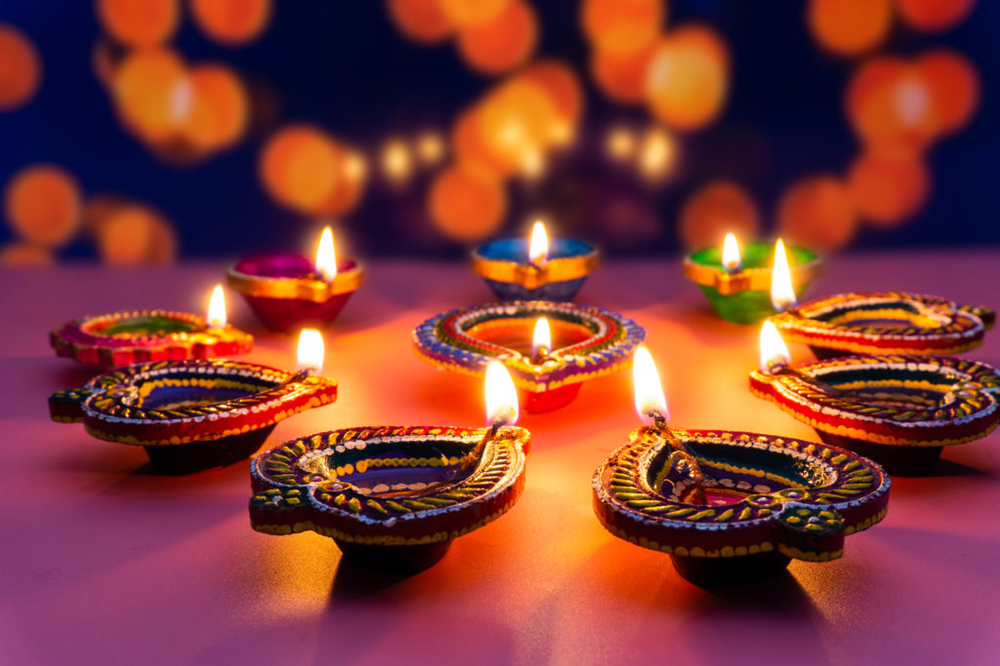
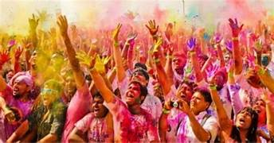
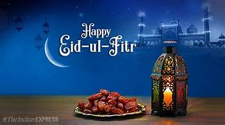
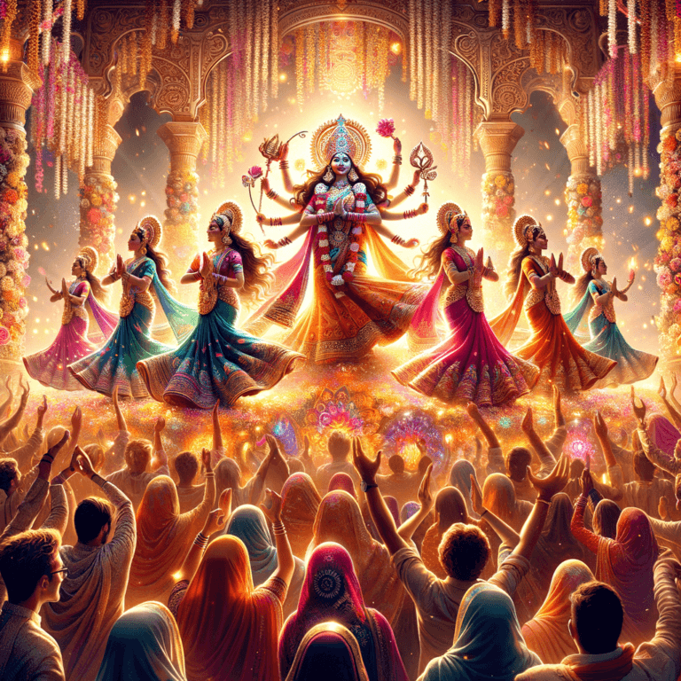

India, known for its rich cultural diversity and heritage, is a land of festivals. With every state and region having its own unique traditions, festivals in India are celebrated with great enthusiasm and devotion. These festivals are a reflection of the country's diverse cultures, religions, and customs, creating a vibrant and colorful atmosphere throughout the year. From the grand celebrations of Diwali to the fun-filled festivities of Holi, every festival brings people together, fostering a sense of unity and joy. In this blog, we'll explore some of the major festivals in India and their significance.
.jpg)
Diwali, one of the most widely celebrated festivals in India, is known as the Festival of Lights. It symbolizes the victory of light over darkness and good over evil. According to Hindu mythology, Diwali marks the return of Lord Rama to Ayodhya after defeating the demon king Ravana. During Diwali, homes are decorated with oil lamps (diyas), colorful rangolis, and lights. People perform pujas (prayers) to Goddess Lakshmi, the deity of wealth and prosperity, seeking her blessings. Fireworks and bursting crackers are an integral part of the celebration, and families come together to exchange gifts and sweets.
Holi, also known as the Festival of Colors, is one of the most joyful festivals in India. It signifies the arrival of spring and the victory of good over evil, as it celebrates the defeat of Holika, a demoness, by the devotion of Prahlad. Holi is famous for the vibrant colors that people throw at each other, along with water balloons and water guns. The streets come alive with music, dancing, and laughter. It's a time to let go of past grievances and start anew, as people forgive and forget, spreading love and happiness.
Eid-ul-Fitr is a significant festival for Muslims, celebrated at the end of the holy month of Ramadan, during which fasting from dawn to sunset is observed. Eid marks the conclusion of this month of self-discipline and devotion. On this day, Muslims attend prayers at mosques, donate to charity (known as Zakat al-Fitr), and celebrate with feasts and gatherings. Special dishes like biryani, kebabs, and sweet delicacies like seviyan (vermicelli pung) are prepared and shared with family and friends. It is a day of gratitude, forgiveness, and community bonding.
Navratri is a nine-day festival dedicated to Goddess Durga and her nine forms. It is celebrated with great zeal, especially in the states of Gujarat, Maharashtra, and West Bengal. In Gujarat, Navratri is famous for Garba and Dandiya Raas, traditional dance forms performed at night with vibrant costumes and rhythmic music. In West Bengal, the festival is celebrated as Durga Puja, commemorating the victory of Goddess Durga over the buffalo demon Mahishasura. Elaborate idols of Goddess Durga are installed in pandals (temporary structures), and people participate in processions, prayers, and cultural performances. The festival concludes with the immersion of the idols in rivers and lakes.
 go to top 2 Next